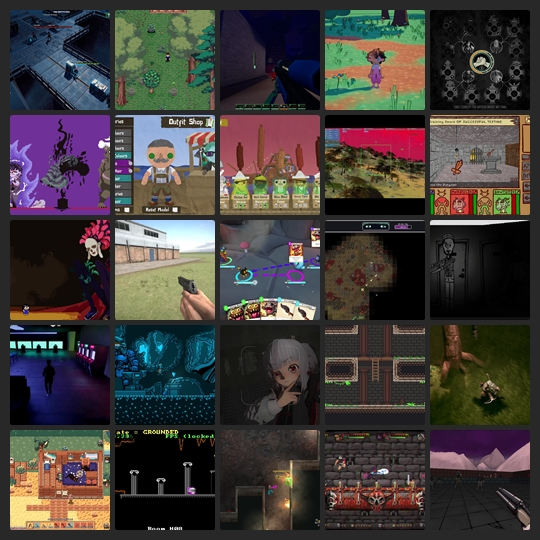

BlueSky Quick Recap #indiedev 2025-09-19
Show Only Saved Posts
Saved Post Num:
---
<< Previous
Home
Next >>

Time Range:
19 Sep 2025
Total Number of Post: 629+
Number of Post Displayed: 49
Post Selection Guidelines
<< Previous
Home
Next >>